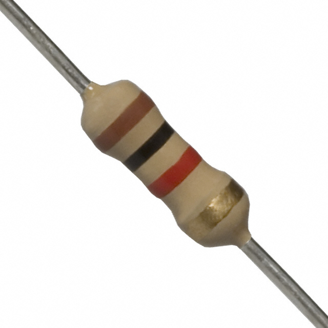

Les 4: Piezo Spekaer
Componenten
De volgende componenten worden gebruikt in deze les:
| 1x Arduino Uno | 1x Breadboard |  |
|
| 3x Weerstand van 270 Ohm |  |
3x LED |  |
| 1x LDR |  |
1x Weerstand van 1k Ohm |  |
LDR
De Arduino kan verschillende signalen ontvangen, namelijk analoog en digitaal. In deze les gaan wij werken met analoog. Een analoog signaal kan meerdere waardes bevattan, in het geval van de Arduino zijn dit 1024 waardes. Deze waardes lopen van 0 tot 1023. Hierdoor kan je veel nauwkeuriger meten dan met een digitaal signaal dat maar twee waardes kan bevatten, namelijk 0 of 1.
Om deze les te maken heb je de volgende schakeling nodig, die hiernaast is weergegeven. Deze schakeling is niet heel anders dan in les 2. Het enige wat veranderd is dat de push button vervangen is door een LDR. Deze LDR wordt op haast dezelfde manier aangesloten als de push button. Hierbij moet worden opgelet dat de data lijn niet naar een digitale poort gaat, maar naar een analoge poort.
De opdracht
De bedoeling is dat bij het veranderen van de lichtsterkte, meer of minder lampjes gaan branden.